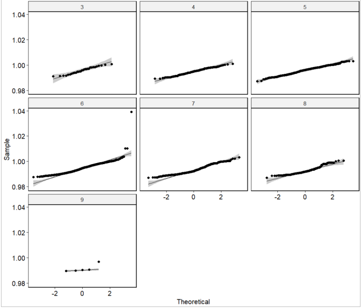
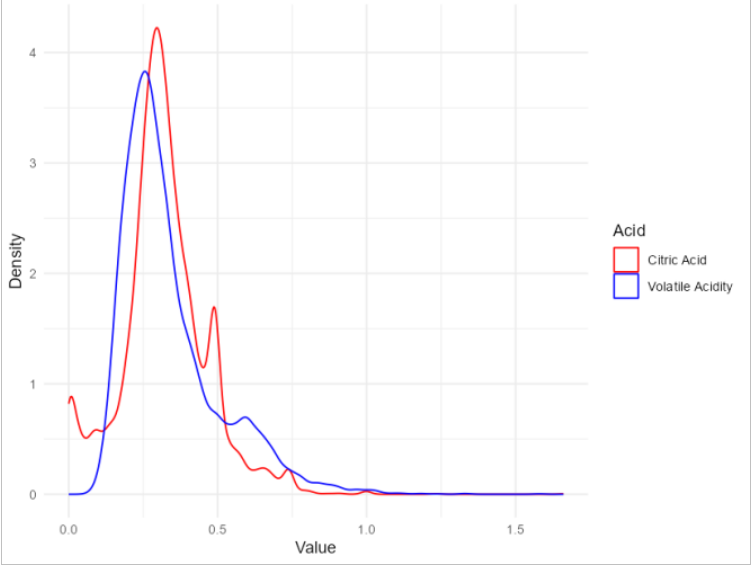

We analyzed a dataset involving twelve physicochemical properties of wine from the UCI Machine Learning Repository, with the aim of understanding the relationships between these properties and their collective influence on the quality of wine. We derived valuable insights using statistical methods such as the Mann-Whitney U Test, the Wilcoxon Rank-Sum Test, linear regression models, and the Kruskal-Wallis Test. We found that the average of chloride differs significantly from zero, and there exists a difference between the mean values of volatile acidity and citric acid. It was observed that citric acid levels significantly affect the pH of the wine. Multiple linear regression revealed that all variables except some quality values significantly affect the pH. Moreover, the Kruskal-Wallis Test demonstrated a significant difference in wine density across different quality levels. This study provides a comprehensive understanding of the physicochemical properties that influence wine quality, which could guide winemakers in their production process and deepen the knowledge of wine enthusiasts.
Below, some graphs about the analysis has shown.

Figure 1: Normality assumption check for quality and density.

Figure 2: Wilcoxon Rank Sum Test for Citric Acid and Volatile Acidity.